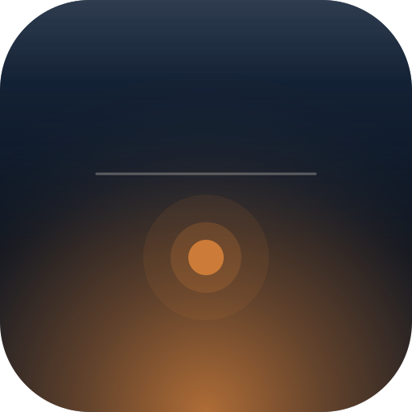

512 / display
Source-of-truth lives in design/icon.svg. During Task 19, generate
static/icon-192.png and static/icon-512.png from this SVG via a build-time script
using sharp (already part of typical Node toolchains, or installable via npm install sharp --save-dev).
The SVG itself is also valid as a PWA icon and can be referenced directly in the manifest as a fallback.